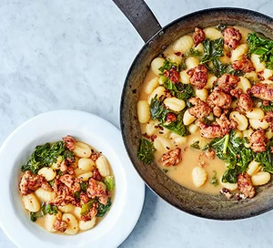

Sausage Gnocchi

Plate up this delicious one-pot of sausage, kale and gnocchi in just 20 minutes, with just five minutes prep. Midweek suppers never got so easy – or tasty!
Ingredients
- 1 tbsp olive oil
- 6 pork sausages
- 1 tsp chilli flakes
- 500g fresh gnocchi
- 500ml chicken stock
- 100g chopped kale
- 40g parmesan, finely grated
Method
- Heat the oil in a large high-sided frying pan over a medium heat. Squeeze the sausages straight from their skins into the pan, then use the back of a wooden spoon to break the meat up. Sprinkle in the chilli flakes and fennel seeds, if using, then fry until the sausagemeat is crisp around the edges. Remove from the pan with a slotted spoon.
- Tip the gnocchi into the pan, fry for a minute or so, then pour in the chicken stock. Once bubbling, cover the pan with a lid and cook for 3 mins, then stir in the kale. Cook for 2 mins more or until the gnocchi is tender and the kale has wilted. Stir in the parmesan, then season with black pepper and scatter the crisp sausagemeat over the top.